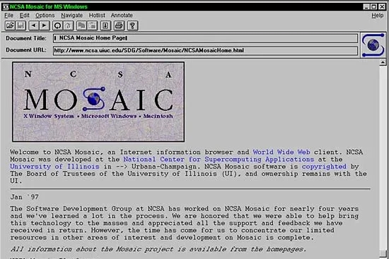
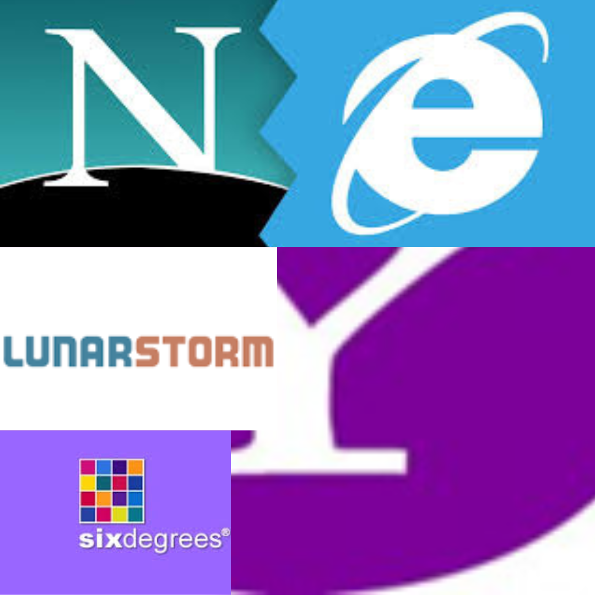
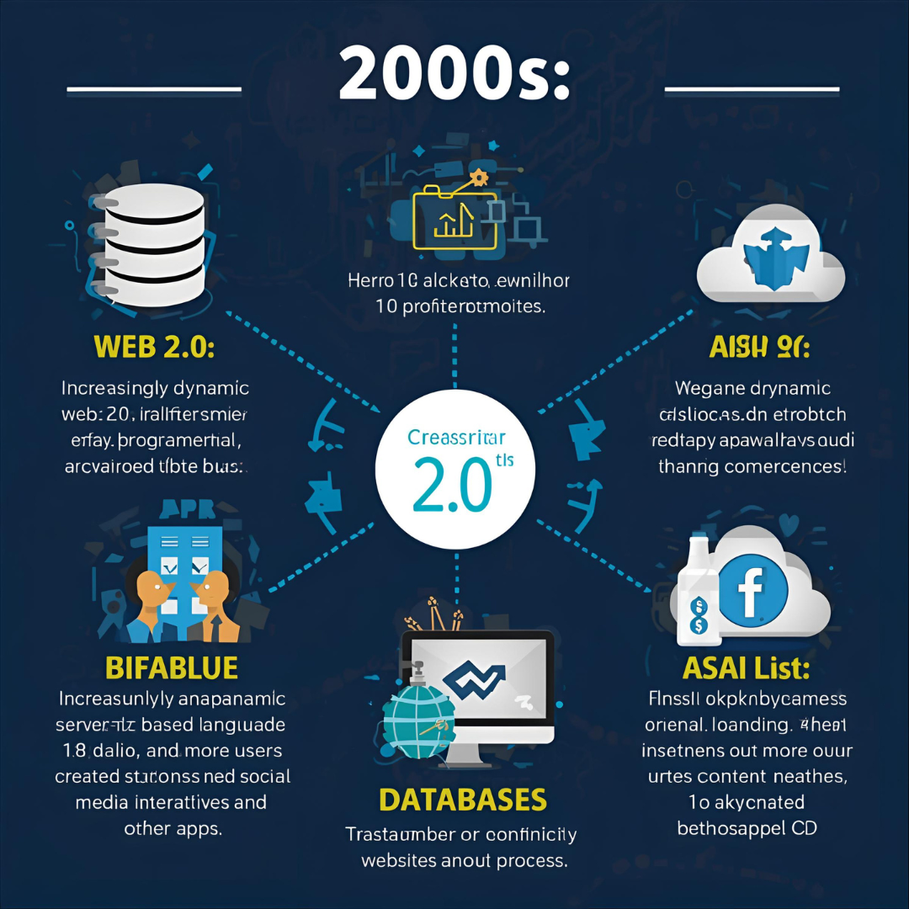

Tidslinje

1989 - 1991
Tim Berners-Lee från London, England skapar World Wide Web (Webben), HTML och HTTP medans han
jobbar på CERN. Berners-Lee utvecklade också den allra första webbläsaren.

1993
Den första grafiska webbläsaren, "Mosaic", lanseras utav Marc Andreessen, Eric Bina och deras team på NCSA.
Mosaic är känd för att vara den första webbläsären som kunde visa bilder inbäddade i text, vilket förändrade webben för evigt.

1996-1997
De första stora sociala medie plattformarna som till exempel Lunarstorm och Six-Degrees lanseras.
Det är krig mellan Netscape och Microsoft om vems webbläsare som är bäst,
samtidigt som webbportaler som Yahoo kommer ut.

2000-talet
Allt mer dynamiska hemsidor, web 2.0, serverbaserade språk(PHP, ASP),
databaser och mer användarskapade grejer kommer ut som till exempel sociala medier, interaktiva hemsidor andra appar.
2010-talet
Ökad mobilanvändning, det kommer ut nya JavaScript-ramverk(React, Vue),
sociala medier och streamingtjänster blir allt större, samt att fokuset på säkerhet,
prestanda och användarvänligheten ökas.
Nutid
Fortsatt utveckling av webbteknologier med fokus på prestanda,
säkerhet och användarupplevelse. Progressiva webbappar (PWA) så som Spotify, Facebook och många fler blir allt vanligare
medans det största fokuset är användningen av AI och maskininlärning på webben.